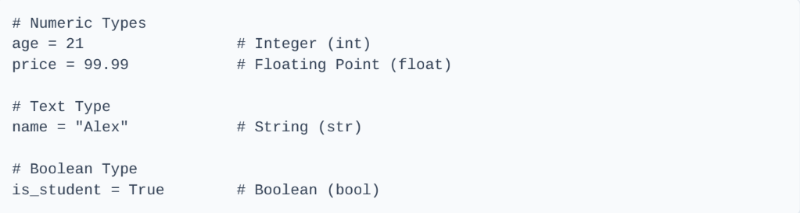
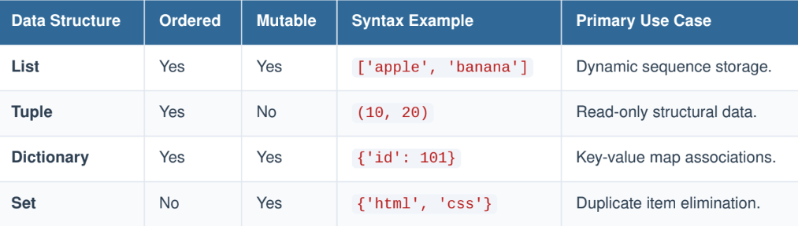

Data Science & Machine Learning Course
Data Science is an interdisciplinary paradigm that combines domain expertise, programming skills, and mathematical foundations to extract actionable insights from structured and unstructured datasets.
Raw analytical infrastructure is often incomplete or inconsistent. Transforming data into clean execution matrices involves several core tasks:
- Imputation of Missing Values:Values: Strategies include dropping sparse attributes, replacing numeric gaps with mean/median metrics, or leveraging advanced predictive tracking models.
- Feature Encoding: Converting categorical strings into logical numeric vectors using methods like One-Hot Encoding or Label Encoding.
- Feature Scaling: Standardizing numeric variables to prevent mathematical variance using Standardization (Z-score normalizations) or Min-Max Normalization techniques.
Writing structured Python programs requires understanding fundamental variable components and operational control flows.

2. Control Flow Structures
Conditional structures and iterative loops orchestrate the execution flow of code modules.
Conditional Statements (if-elif-else)if score >= 90:
print("Grade: A")
elif score >= 80:
print("Grade: B")
else:
print("Grade: C")
Loops (for & while)
for i in range(3):
print(f"Iteration index: {i}")
# While Loop: Executing actions while conditional rules persist
count = 0
while count < 3:
print(f"Count: {count}")
count += 1
Python features built-in container architectures designed to cluster data records systematically.

programming_languages.append("Go")
# Working with a Dictionary
user_profile = { "username": "coder_99",
"level": 5
}
print(user_profile["username"])
1. Reusable Functions
Functions isolate specific execution paths into reusable program modules.
return width * height
# Invoking the function block
result = calculate_area(5, 10)
print(f"Calculated Area: {result}")
2. Object Oriented Programming (OOP)
Classes and objects map operational code blocks directly to real-world structural entities.
# The Constructor Method
def __init__(self, device_name, operating_system):
self.name = device_name # Instance attribute
self.os = operating_system # Instance attribute
# Custom Instance Method
def boot_up(self):
return f"{self.name} running {self.os} is powering on..."
# Instantiating an Object from the Class blueprint
my_phone = SmartDevice("Pixel 8", "Android")
print(my_phone.boot_up())
Or you can download the Pdf files here.